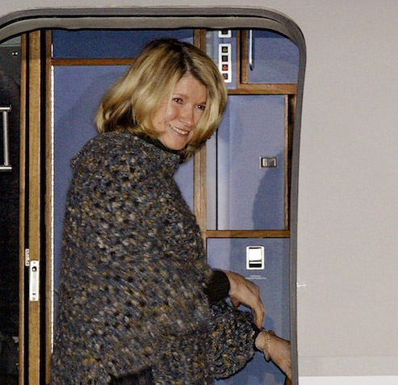

The decade that gave us Facebook, the iPhone, political milestones and Britney Spears.
Pop Culture
2002: Halle Berry cries as she accepts the best actress Oscar. Recognized for her role in “Monster’s Ball,” became the first African-American to win best actress. “This moment is so much bigger than me...
Venus and Serena Willams win the Wimbledon doubles title in June 2002. The two
dominated women’s tennis during the decade, with Serena winning 10 Grand Slam
singles titles and Venus winning seven. They also won eight Grand Slam doubles
titles during those 10 years.
Pop star Michael Jackson briefly dangles his infant son, Prince,
over a fourth-story hotel balcony as he greets fans in Berlin in
November 2002.
2004: During the Super Bowl halftime show, Justin Timberlake
tore off part of Janet Jackson’s costume, exposing her right breast and a
pasty over her nipple. It happened as Timberlake sang the line, “I'm gonna
have you naked by the end of this song." The “wardrobe malfunction” sparked
outrage and an FCC crackdown on indecency.

2005: Television personality Martha Stewart, America’s first
self-made female billionaire, boards a private airplane after being released
from prison in West Virginia She served five months for lying and obstructing
justice in a 2001 stock sale. The poncho she was wearing had been knitted
for her by a fellow inmate.

2007: Pop star Britney Spears, with a shaved head, attacks a
paparazzo’s car with an umbrella outside the home of her ex, "K Fed". It was
a troubled year for britney, who spent time in rehab and lost custody of her
children. In 2008 she was hospitalized twice, and the next month a court gave
her father conservatorship to her affairs after she was deemed unable to take
care of herself.
The Tech Revolution
2000: Electric companies, banks and government workers feared that
functions could stop working at 12:00 AM, January 1, 2000. This
was fueled by the press coverage and other media speculation, as well
as corporate and government reports. All over the world companies and
organizations checked and upgraded their computer systems.
2003: Apple launches iTunes which becomes a major
success selling 10 million songs in only 4 months of launch.
2004: Facebook is launched as a social networking site
only open to students from Harvard by Mark Zuckerberg with
his college roommates and fellow classmates Eduardo Saverin,
Dustin Moskovitz and Chris Hughes. It is expanded first to other
colleges in the Boston area and other Ivy League Colleges.
2006: Twitter launches
2007: iPhone debuts. Apple CEO Steve Jobs unveils the multimedia
entertainment device that’s equal parts phone, MP3 player, Internet browser,
and overpriced status symbol. Frenzied customers line up early to get an
iPhone upon its June 29 release
Political Milestones
2000: Bush V. Gore.In December of 2000, the U.S.
Supreme Court rules to end the vote recount in Florida in the Bush v.
Gore case, giving the presidency to George W. Bush after a prolonged
legal battle following the election.The results in Florida were so
close that it triggered an automatic machine count of votes under
Florida law, the results tightened the race showing that less than
600 votes separated the two candidates.
Julie and Hillary Goodridge accompanied by their 8-year-old daughter, Annie, apply for a marriage license at Boston’s City Hall in May 2004. Massachusetts became the first US state to legally sanction same-sex marriage.
2008: Protesters hold signs behind Richard Fuld, the former CEO of Lehman Brothers, as he goes to testify to the House Committee on Oversight and Government Reform. Lehman Brothers is one of the United States’ oldest investment banks. They filed for bankruptcy after losing bad bets on the housing and commercial real-estate markets. Lehman Brothers’ collapse unleashed a crisis of confidence that threw markets into turmoil worldwide and created the worst financial downturn since the Great Depression.
Fashion
2000: Singer Jennifer Lopez turned heads at the Grammy
Awards with this low-cut Versace dress in February 2000. The
revealing outfit was so popular that it spurred Google to invent
a search tool for online images. Kirby Lee/WireImage/Getty Images
2001: Nobody could forget this iconic moment in fashion
history. The IT couple went for full-on denim and blinged out accessories
in a look that could only belong to the early 2000s.
Works Cited
-
Fisher, Lauren Alexis. “The 50 Craziest, Most Cringe-Worthy Outfits Celebrities Wore In The
Early 2000s.” Harper's BAZAAR, Harper's BAZAAR, 11 Oct. 2017,
www.harpersbazaar.com/celebrity/red-carpet-dresses/g12025412/early-2000s-fashion/ - Hanks, Tom. “The 2000s.” The 2000s, season 1, episode 1-7, CNN, 8 July 2018.
- Hays, Julia. “Britney Spears & Justin Timberlake's Denim Date Happened 15 Years Ago Today.” E! Online, E! News, 8 Jan. 2016, www.eonline.com/fr/news/729308/britney-spears-justin- timberlake-s-denim-date-happened-15-years-ago-today
-
“Political Moments That Shaped the 2000's.” Sutori, www.sutori.com/story/the-political-events-
that-shaped-the-2000s--ASD9QKa5AM3D6Tz29GbF1vX5 -
“The 2000s.” CNN, Cable News Network, 6 June 2018, www.cnn.com/shows/the-2000s-
original-series.